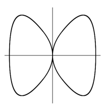

11 Rings of dimension 1
11.1 Regular Rings and Normal Rings
For a regular local ring \((R, \m)\) of dimension \(1\), we know there exists \(\pi \in R\) called a uniformizing parameter such that \(\m = (\pi).\) Hence, for a nonzero element \(a\in R\), we can write
for some \(u \in R^\times\) and \(n \in \N\) uniquely determined by \(\pi\). Hence, \(R\) is a UFD with only one prime element. Moreover, for \(0 \neq a \in K:=\Quot(R)\), we similarly have the same equality for some \(u \in R^\times\) and \(n \in \Z\) uniquely determined by \(\pi\). Then, we obtain a map
This map satisfies
and is thus called a (discrete) valuation on \(K\). Additionally, we can obtain \(R = \{a \in K \mid \nu(a) \ge 0\}\) and can be called discrete valuation ring (DVR).
Theorem 11.1
Let \((R, \m)\) be a Noetherian, local ring of dimension \(1\).
Proof
Follows from C.10.6.
Required to proove: \(\m\) is principal.
From C.7.9, we get a system of parameters \(a\in R\) s.t.
For \(b\in R\setminus(a)\) we define the colon ideal
As \(R\) is Noetherian, we can choose \(b\) such that \((a):(b)\) is maximal among all colon ideals.
\Claim: \((a):(b)\) is a prime ideal
\(\begin{align*} & b \notin (a) \\ & \implies (a):(b) \neq R \end{align*}\)
Let \(x, y \in R\setminus(a):(b)\).
\(\begin{align*} \implies& xb \notin (a) \land (a):(b) \subseteq (a):(xb) \\ \overset{\text{max}}{\implies}& (a):(xb) = (a):(b) \\ \implies& y \notin (a):(xb) \\ \implies& yxb \notin (a) \\ \implies& xy \notin (a):(b) \\ \implies& (a):(b) \text{ is prime} \end{align*}\)
We have that \(\m\) is minimal over \((a)\) and thus \(\m = (a):(b)\).
Consider the \(R\)-module \(I:=\frac{b}{a}\m \subseteq K\). As \(\m = (a):(b)\), we have that \(I \subseteq R\), so it is an ideal of \(R\).
\Claim: \(I = R\)
Assume the converse.
\(\begin{align*} \implies& I \subseteq \m \\ \implies& \frac{b}{a}\m \subseteq \m \\ \implies& \m \text{ is an } R\left[\frac{b}{a}\right]\text{-module} \end{align*}\)
\(\m\) is finitely generated as an \(R\)-module.
\(\begin{align*} \implieshref{../../dimensions/integral_extensions/l83}{L.8.3} & \frac{b}{a} \text{ is integral over } R \\ \overset{\text{hyp}}{\implies}& \frac{b}{a} \in R \\ \implies& b \in (a) & \contradiction \end{align*}\)
\(\begin{align*} \implies& R = \frac{b}{a} \m \\ \implies& \m = \frac{a}{b} R \\ \implies & \frac{a}{b} \in R \\ \implies & \m = \left(\frac{a}{b}\right) \end{align*}\)
Remark
Let \(S\) be a normal Noetherian ring.
For a normal affine variety \(X\) over an algebraically closed field, \(X_{\text{sing}} \subseteq X\) has codimension \(\ge 2\).
Moreover, a normal affine curve \(X\) is nonsingular.
If also irreducible we have an equivalence.
So normalization is the same as desingularization.
Example 11.2
Let \(X=\V_{\C^2}(x^4 + y^4 - x^2)\).

By normalizing \(A:=\C[X]\), we desingularize \(X\). From the Jacobian criterion T.10.8, we get that \(X_{\text{sing}} = \{(0, 0)\}\). Then, by T.11.1, \(A_x\) is normal for all \(x \neq (0, 0)\).
\(\begin{align*} \implieshref{#t111}{T.11.1}& A_x \text{ is normal } \forall\ x \neq (0, 0) \\ \implies& \tilde A \subseteq A_x, \quad \forall\ x \neq (0, 0) \\ \implies& f/g \in \tilde A \text{ satisfies } g(x, y) \neq 0 \quad \forall\ (x, y) \neq (0, 0) \end{align*}\)
11.2 Dedekind Domains
Definition 11.3
\(\begin{align*} \text{Let } & R \text{ be an integral domain} \\ & K := \Quot(R) \end{align*}\)
Fractional ideal
A fractional ideal of \(R\) is a nonzero \(R\)-submodule \(I \subseteq K\) s.t.
For \(I, J \subseteq K\) fractional ideals, we define
wich is itself a fractional ideal.
Invertible fractional ideal
A fractional ideal \(I\) is called invertible if
We denote \(\Cfi(R)\) the group of all invertible fractional ideals. It is abelian.
For a fractional ideal. \(I \subseteq K\), we define
which is itself a fractional ideal. If \(I\) is invertible, we get
so if the inverse exists, it is \(I^{-1}\). Furthermore, for \(a\in K^\times\), we have \((a)_R \cdot (a^{-1})_R = R\), and we obtain a map
We call \(\Cl(R):=\Cfi(R)/\Im \psi\) the ideal class group of \(R\). This can be nontrivial, as shown in the following example.
Example 11.4
\(\begin{align*} \text{Let } & R = \Z[\sqrt{-5}] \subseteq \C \\ & I = (2, 1+\sqrt{-5})_R \\ & J = (1, \frac{1-\sqrt{-5}}{2})_R \end{align*}\)
Hence, \(I\) is invertible, but not a principal ideal. This makes \(\Cl(R)\) nontrivial.
Definition 11.5
Dedekind Domain
A Noetherian normal domain of dimension at most \(1\) is called a Dedekind domain.
Example 11.6
Examples of Dedekind domains:
- \(\Z\) and \(\Z[\sqrt{-5}]\)
- Coordinate rings of irreducible, nonsingular curves
Theorem 11.7
\(\begin{align*} \text{Let } & R \text{ be a Dedekind domain} \\ & K := \Quot(R) \end{align*}\)
(a)
Every fractional ideal \(I \subseteq K\) is invertible.
(b)
Every ideal is a finite product of prime ideals. The empty product is defined as \(R\). The factorizaton is unique up to order.
Proof
Let \(\{0\} \neq P \in \Spec R\). Then, \(P\) is maximal and \(P^{-1} P \ideal R\) is an ideal.
\(\begin{align*} \implieshref{#l118}{L.11.8}& P \subsetneq P^{-1} P \quad (*) \\ \implies P^{-1} P = R \\ \implies P \text{ is invertible} \end{align*}\)
Assume the converse, and let \(I\) be tha maximal of all ideals that are not a product of prime ideals.
\(\begin{align*} & \implies \{0\} \subsetneq I \subsetneq R \\ & \implies \exists\ P \in \Spec R : I \subseteq P \\ & \implies P^{-1} I \subseteq P^{-1} P = R \end{align*}\)
\(I\) is maximal and \(I \subsetneq P^{-1} I\) by L.11.8
\(\begin{align*} & \implies \exists P_i \in \Spec R : P^{-1} I = \prod_{i=1}^{r} P_i \\ & \implies I = R I = P P^{-1} I = P \prod_{i=1}^{r} P_i \quad \contradiction \end{align*}\)
Assume there are two factorizations
Then, uniqueness holds for \(r=0\). Assume \(r > 0\).
\(\begin{align*} \implies & \prod_{i=1}^{s} Q_i \subseteq P_1 \\ \implieshref{../../dimensions/principal_ideal_thm}{T.7.3} & \exists\ j : Q_j \subseteq P_1 \\ \implies & Q_j = P_1 \quad \text{as Q is maximal} \end{align*}\)
Then, the uniqueness follows by induction.
Let \(I \subseteq K\) be a fractional ideal.
\(\begin{align*} \implies & \exists\ 0 \neq a \in R : J:=aI \subseteq R \\ \overset{(b)}{\implies} & J = \prod_{i=1}^{r} P_i \\ \overset{(*)}{\implies} & \prod_{i=1}^{r} P_i^{-1} \cdot (a) \cdot I = R \\ \implies & I \text{ is invertible} \end{align*}\)
Lemma 11.8
\(\begin{align*} \text{Let } & R \text{ be a Dedekind domain} \\ & I \ideal R \\ & P \in \Spec R \end{align*}\)
Proof
We have that \(1 \in P^{-1}\), so \(I \subseteq P^{-1} I\). Morover, \(\dim(R) \le 1\).
\(\begin{align*} \implies & \dim(R_P) = 1 \\ \implieshref{#t111}{T.11.1}& R_P \text{ is regular} \\ \implies & \exists\ \pi : P_P = (\pi)_{R_P} \end{align*}\)
Moreover, as \(R\) is Noetherian, \(P=(a_1, \dots, a_n)_R\) and \(\pi^{-1} a_i \in \pi^{-1} P_P = R_P\).
\(\begin{align*} & \implies \exists\ u \in R\setminus P : u \pi^{-1} a_i \in R \quad \forall\ i \\ & \implies\gamma:= u \pi^{-1} \in P^{-1} \end{align*}\)
\(P\) induces a valuation \(\nu\) on \(K\). Choose \(a \in I\) minimizing \(\nu\).
\(\begin{align*} & \nu(\gamma) = -1 \\ & \implies \nu(\gamma a) = \nu(a) - 1 \\ & \implies \gamma a \in P^{-1} I \setminus I \end{align*}\)
Remark
Theorem 11.10
Factorial Dedekind Domains
Let \(R\) be a Dedekind domain.
11.3 Elliptic curves
Let \(K\) be an algebraically closed field of characteristic not equal to \(2\) or \(3\), and \(E \subseteq K^2\) be a curve given by
with \(a, b \in K\) such that there are no singular points or cusps on \(E\). In other words, \(4a^3 + 27b^2 \neq 0\). Then, by the Jacobian criterion T.10.8, \(E\) is nonsingular. Then, \(R:=K[E]\) is a Dedekind domain and \(\{0\} \neq I \ideal R\) is a product of maximal ideals in \(R\) corresponding to the points on \(E\). Moreover, if the ideal is principal, the product of maximal ideals is mapped to the identity in \(\Cl(R)\).
Lemma 11.11
\(\begin{align*} \text{Let } & X \subseteq K^2 \text{ be a nonsingular affine curve s.t. } \I(X) = (g) \text{ for some } g \in K[x, y]\setminus (y) \\ & \xi_1, \dots, \xi_r \in K \text{ be pairwise distinct zeros of } g(x, 0) \\ & e_1, \dots, e_r \text{ be their multiplicities} \\ & \m_i := (x-\xi_i, y) /(g) \in \Spec{K[X]} \end{align*}\)